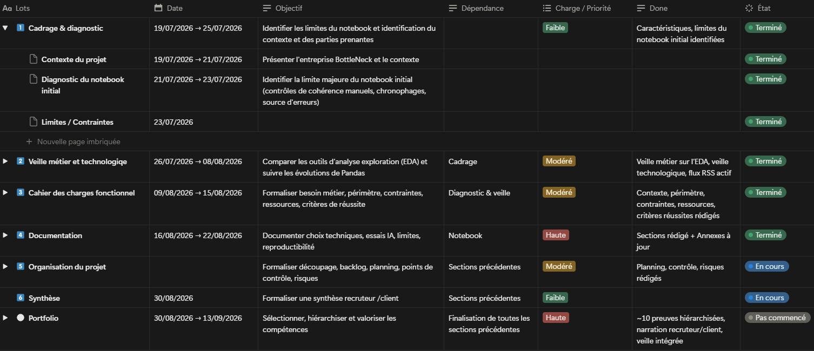
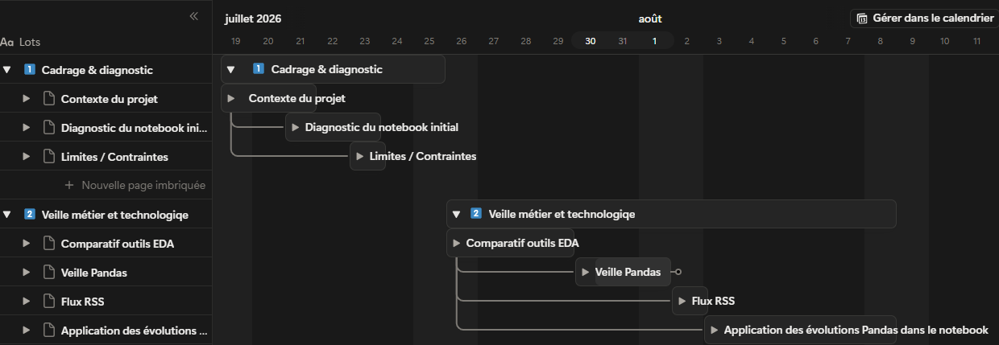

- 143 680 €de chiffre d'affaires recalculé, contre 154 798 € en 2025
- 825produits de l'ERP analysés, aucun écarté
- 8semaines de projet, du diagnostic au portfolio
01 Contexte & besoin métier
Ce projet reprend l'analyse des ventes et des stocks de BottleNeck réalisée en 2025 (P06), pour fiabiliser les données et accélérer leur contrôle.
La relecture du notebook de 2025 a montré que les contrôles de cohérence étaient faits à la main, variable par variable. Ils prenaient du temps et des erreurs pouvaient passer inaperçues. Les résultats n'étaient lisibles que par un profil technique.
L'analyse est commandée par le responsable des ventes. Ses résultats sont destinés au comité de direction, qui doit pouvoir s'appuyer dessus pour décider.
Critères de réussite fixés au départ
- Aucune valeur manquante sur les champs utilisés dans les calculs : identifiants, prix et stock.
- Des données cohérentes : prix et stocks positifs, statut de stock conforme à la quantité, aucun doublon d'identifiant.
- Deux méthodes de détection des prix atypiques comparées, et chaque prix atypique conservé justifié.
- Un notebook reproductible : exécuté en entier, il donne le même fichier final à chaque fois.
02 Données
Les trois fichiers Excel de la version 2025 : une extraction arrêtée au 31 octobre, avec les ventes du mois d'octobre. Ils ne contiennent aucune donnée personnelle.
| Fichier | Contenu | Colonnes | Lignes |
|---|---|---|---|
| ERP | Prix de vente et d'achat, stock, statut de stock | 6 | 825 |
| Site marchand | Ventes et fiches produit | 29 | 1 513 |
| Table de liaison | Correspondance entre identifiants ERP et web | 2 | 825 |
Anomalies repérées
- 3 prix de vente négatifs dans l'ERP (−20 €, −9,10 € et −8 €).
- 2 stocks négatifs (−10 et −1), et 2 produits dont le statut contredit la quantité en stock.
- 1 513 lignes pour 714 identifiants sur le site : 85 lignes sans identifiant, et la plupart des produits présents sur deux lignes.
- 4 produits présents deux fois avec des ventes différentes, par exemple 116 et 6 bouteilles pour le même champagne.
- 91 produits de l'ERP sans identifiant web, donc absents du site marchand.
03 Démarche
-
Cadrer et planifier le projet
Un cahier des charges a d'abord été rédigé : contexte, parties prenantes, périmètre traité et non traité, contraintes, ressources et critères de réussite. Il comprend aussi un plan de formation pour les lecteurs non techniques, présenté sur la page Veille.
Le projet a ensuite été découpé en 7 lots dans Notion, du diagnostic du notebook jusqu'au portfolio. Chaque lot a ses dates, ses dépendances, une priorité et une définition de ce qui est « terminé ».
Pourquoi ce choix
Un lot ne commence que lorsque celui dont il dépend est terminé. Sans relecture extérieure, chaque étape est validée en vérifiant que l'objectif fixé dans le planning est atteint.


-
Comparer des outils pour accélérer le diagnostic
Quatre outils ont été testés sur le fichier ERP : Pandas, Polars, D-Tale et Sweetviz. Deux autres, ydata-profiling et AutoViz, n'ont pas pu être utilisés à cause de conflits entre versions de bibliothèques. Le détail de la comparaison est présenté sur la page Veille.
Pourquoi Pandas et Sweetviz
Polars lit le fichier plus vite que Pandas (0,006 contre 0,2 seconde), mais sur 825 lignes la différence ne se remarque pas, et ses résultats sont aussi techniques. Pandas est donc gardé pour le diagnostic détaillé, et Sweetviz pour le rapport destiné au responsable des ventes, qui s'ouvre sans notebook. D-Tale est écarté, car il rend les données accessibles depuis le réseau pendant son exécution.
-
Mettre en place une veille automatisée sur Pandas
La page des notes de version de Pandas n'a pas de flux RSS. Elle a été convertie en flux avec RSS.app, puis ajoutée à Feedly. Les nouvelles versions y apparaissent sans recherche manuelle, mais aucune alerte n'est envoyée.


-
Corriger les prix et les stocks négatifs
En 2025, les 3 produits aux prix négatifs avaient été supprimés. Cette fois, le signe est corrigé et les produits restent dans l'analyse. Les 2 stocks négatifs passent à zéro, et le statut de stock est recalculé à partir de la quantité. Un contrôle après chaque correction vérifie qu'il ne reste aucune valeur négative ni aucun statut incohérent.
Pourquoi corriger le signe
Une fois le signe retiré, ces prix valent entre 1,8 et 2 fois leur prix d'achat. C'est l'écart habituel du catalogue, où le prix de vente médian vaut 1,91 fois le prix d'achat médian. Une erreur de signe à la saisie est donc l'explication la plus probable.
-
Dédoublonner les ventes du site
Sur le site, 4 produits apparaissaient deux fois avec des ventes différentes. Pour chacun, seule la valeur la plus basse est gardée. Le fichier compte ensuite une ligne par identifiant, soit 714 produits.
Pourquoi garder la valeur la plus basse
Les valeurs hautes reprennent la valeur basse précédée d'un ou deux chiffres : 6 et 116, 11 et 111, 22 et 122, 2 et 22. Trois d'entre elles dépassent 100 ventes, alors que le produit le plus vendu du fichier corrigé en compte 36. Ce sont très probablement des erreurs de saisie. En 2025, ces doublons avaient été conservés.
-
Relancer le diagnostic sur la table finale
Les trois fichiers sont rapprochés par deux jointures, comme en 2025. Les contrôles utilisés sur les fichiers sources sont regroupés dans un fichier à part, puis relancés sur la table finale : 825 lignes, aucun doublon, et 111 produits sans ventes sur le site.
Pourquoi regrouper les contrôles
Les mêmes contrôles servent à chaque étape sans recopier le code. Si une nouvelle extraction arrive, il suffit de relancer la même fonction.
-
Choisir une méthode de référence pour les prix atypiques
Deux méthodes ont été comparées. Le Z-score (prix à plus de 3 écarts-types de la moyenne) signale 17 articles, tous au-dessus de 114 €. L'écart interquartile en signale 36, soit 4,4 % du catalogue, au-delà de 83,25 €.
Pourquoi l'écart interquartile
Quelques articles très chers tirent la moyenne des prix vers le haut. Le Z-score est calculé à partir de cette moyenne : il est donc influencé par ces articles. L'écart interquartile se base sur la moitié centrale des prix, que ces articles modifient très peu.
Les 36 articles sont conservés : il s'agit de cognacs, whiskies, champagnes et vins haut de gamme, dont le prix élevé paraît cohérent.
-
Documenter l'usage de l'IA
Claude Code a été utilisé comme aide, surtout pour comparer les outils et comprendre des erreurs d'installation. Seuls les échanges qui ont changé quelque chose au projet sont documentés, avec la vérification faite et la décision prise.
Deux exemples de vérification
L'IA avait expliqué que D-Tale ouvre un accès réseau aux données. Cette explication a été vérifiée en lançant D-Tale puis une commande dans un terminal, avant d'écarter l'outil.
Elle avait aussi proposé d'écrire que les nouveautés de Pandas étaient « reçues automatiquement ». La formulation a été retirée : le flux collecte les nouveautés, mais aucune alerte n'est configurée.
04 Résultats & impact
Après correction, le chiffre d'affaires baisse de 11 118 € (−7,2 %) par rapport à la version 2025, et le lien entre prix et ventes est plus marqué.
| Indicateur | 2025 (P06) | 2026 (P13) |
|---|---|---|
| Lignes de la table finale | 827, doublons compris | 825, une par produit |
| Prix négatifs | 3 produits supprimés | 3 signes corrigés |
| Ventes en double sur le site | Conservées | 4 corrigées |
| Chiffre d'affaires | 154 798 € | 143 680 € |
| Stock valorisé au prix d'achat HT | 252 906 € | 248 857 € |
| Corrélation prix / ventes | −0,27 | −0,52 |
| Corrélation stock / ventes | 0,29 | 0,45 |
| Prix atypiques (écart interquartile) | 36 | 36 |
| Contrôles de cohérence | Manuels | Vérifiés après chaque correction et relancés sur la table finale |
Constats
- Le chiffre d'affaires de 2025 était surestimé de 11 118 €. Tout l'écart vient des ventes comptées deux fois : 4 produits aux ventes gonflées (10 943 €) et un bon cadeau (175 €).
- Le prix a plus d'influence sur les ventes que ne le montrait la version 2025. La corrélation passe de −0,27 à −0,52 : les ventes gonflées masquaient en partie ce lien. Les articles les moins chers se vendent mieux.
- Les contrôles font partie du notebook. À chaque exécution, ils vérifient les prix et stocks négatifs, les statuts de stock et les doublons.
- Le responsable des ventes peut lire le diagnostic. Le rapport Sweetviz s'ouvre sans notebook et montre les valeurs manquantes et les anomalies à faire corriger.
Recommandations
- Vérifier les 4 produits à marge négative avec le responsable des ventes, en commençant par le champagne vendu 12,65 € pour un prix d'achat de 77,48 €.
- Uniformiser la codification des références produit dans l'ERP et sur le site, pour éviter les identifiants absents ou non conformes.
- Automatiser le rapprochement des trois fichiers si les extractions deviennent régulières.
- Écrire les règles de qualité dans un outil dédié comme Pandera, pour qu'elles soient vérifiées automatiquement à chaque nouvelle extraction.
- Retester ydata-profiling quand ses dépendances seront compatibles, et suivre les prochaines versions de Pandas grâce au flux de veille.
05 Limites & prochaines pistes
La correction des doublons repose sur une hypothèse. Garder la valeur de ventes la plus basse est cohérent avec les données, mais doit être confirmé par le responsable des ventes.
La comparaison des outils reste partielle. ydata-profiling et AutoViz n'ont pas pu être testés jusqu'au bout à cause de conflits entre versions de bibliothèques.
Les prix atypiques sont conservés sur un jugement métier, sans validation statistique supplémentaire. Des anomalies qui combinent plusieurs variables peuvent aussi passer inaperçues.
L'analyse porte sur un seul mois de ventes. Elle ne permet pas de suivre l'évolution de l'activité ni de repérer une saisonnalité.
Le suivi des versions s'est fait par le nom des fichiers, sans outil de gestion de versions ni relecture extérieure.
Prochaines pistes
- Relancer l'analyse sur plusieurs mois d'extractions pour suivre l'évolution des ventes et des stocks.
- Utiliser une nouveauté de Pandas 3.0 pour repérer en une seule étape les produits de l'ERP absents du site.
- Suivre les versions du notebook avec Git.